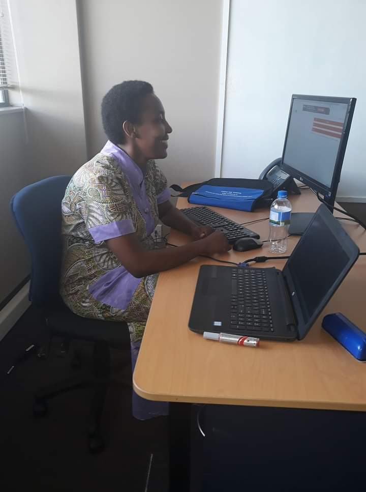

| About | |||
|---|---|---|---|
|  | I am a software developer with a creative mind behind software programs, and I have the technical skills to build those programs or to oversee my creation in a team. I create software that enables users to perform specific tasks on computer devices. |
Profile experience from october2020 up to Now: I am currently gaining knowledge in andela Working experience from 2017-2018: a web development tutor Education experience from 2008-2012: computer science bachelor from AUCA |
My Address: Kinyinya sector, Gasabo District KG464 |
| Software developers typically have a bachelor's degree in computer science and a strong set of programming skills. Students studying computer science should focus on classes related to building software |
|||
| Creativity and innovation: our minds are behind new software capabilities, even when others say it can't be done. Analytical skills: You'll have to match improvements and creations to users' and clients' needs |